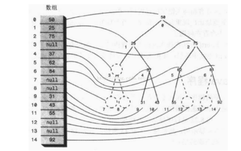

二叉树
为什么要用到树呢？因为树结合了两种数据结构的优点：一种是有序数组，一种是链表。在树中查找数据项的速度和有序数组中查找一样快；插入、删除数据项的速度和链表一样快。
1. 用Java代码实现树
首先要有一个节点对象的类，这些对象包含数据，数据代表要存储的内容，还有指向节点的两个子节点的引用。
1 | class Node{ |
- Tree类
还需要一个表示书本身的类，由这个类实例化的对象包含所有的节点。它只有一个数据字段：表示根的Node变量。它不需要包含其他节点的数据字段，因为其他节点可以通过根节点访问到。
Tree类有很多方法，它们用来查询、插入和删除节点；进行不同的遍历；显示树。
1 | class Tree{ |
- TreeApp类
最后还需要一个操作树的类。创建树、插入节点和查询节点。
1 | class TreeApp{ |
2.实现查找节点的代码
二叉查找树，如果左子树不为空，则左子树上的结点值均小于它根节点的值，若它的右子树不为空，则右子树上的所有节点值均大于它的根节点。
1 | public Node find (int key){ |
3. 实现插入的代码
1 | public void insert ( int id, double dd){ |
4. 遍历树
中序遍历
- 调用自身来遍历节点的左子树
- 访问这个节点
- 调用自身来遍历节点的右子树
1
2
3
4
5
6
7
8
9private void inOrder ( node localRoot ){
if( localRoot != null ){
inOrder ( localRoot.leftChild );
System.out.print ( localRoot.iData + “ “);
inOrder ( localRoot.rightChild );
}
}
前序遍历
- 访问节点
- 调用自身遍历该节点的左子树
- 调用自身遍历该节点的右子树
1
2
3
4
5
6
7
8public void preOrder(Node root) { //先序遍历
printNode(root);
if (root.leftChild != null) { //使用递归进行遍历左孩子 preOrder(root.leftChild);
}
if (root.rightChild != null) { //递归遍历右孩子 preOrder(root.rightChild);
}
}后序遍历
- 调用自身遍历该节点的左子树
- 调用自身遍历该节点的右子树
- 访问该节点
1
2
3
4
5
6
7
8
9public void afterOrder(Node root) { //后序遍历
if (root.leftChild != null) {
afterOrder(root.leftChild );
}
if(root.rightChild != null) {
afterOrder(root.rightChild );
}
printNode(root);
}
5.查找最大值和最小值
查找最小值时，先走带根的左子节点处，然后接着走到子节点的左子节点，以此类推，直到找到一个没有左子节点的节点，这个节点就是最小值节点。
按照相同的步骤来查找树中的最大值，不过要找到右子节点，一直向右找到没有右子节点的节点，这个节点就是最大值的节点。
1 | /* 查找最小值 */ |
6.删除节点
删除节点时，要删除的节点可能会有三种情况需要考虑：
- 该节点是叶节点（没有子节点）
- 该节点有一个子节点
- 该节点有两个子节点
情况1： 删除没有子节点的节点
删除叶节点，只需要改变该节点的父节点的对应子字段的值，由指向该节点改为null就可以了。要删除的节点仍然存在，但它已经不是树的一部分了。
1 | public boolean delete ( int key ){ |
情况二： 删除有一个子节点的节点
这个节点只有两个连接：连向父节点的和连向它唯一的子节点的。需要从这个序列中剪断这个节点，把它的子节点直接连接到它的父节点上。
有四种不同的情况：要删除的节点的子节点可能有左子节点或右子节点，要删除的节点也可能是自己父节点的左子节点或右子节点。
1 | public boolean delete ( int key ){ |
情况三：删除有两个子节点的节点
多种情况，十分复杂！！！
7. 用数组表示树
用数组的方法时，节点存在数组中，而不是由引用相连，节点在数组中的位置相对应于它在树中的位置。按照从左到右的顺序存储树的每一层。
树中的每个位置，无论是否存在节点都对应数组中的一个位置，树中没有节点的位置在数组中的对应位置用0或null来表示。

基于这种思想，在数组中查找节点有以下规律：
如果节点索引值是index，那么节点的左子节点是—>2*index+1;
节点的右子节点是—>2*index+2;
它的父节点是—>(index-1)/2。